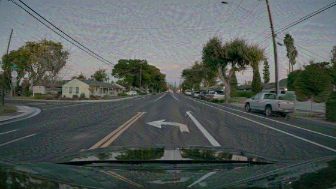

NeurIPS 2026 · Evaluations & Datasets Track
RedPhys: A Unified Red-Teaming Benchmark for Physical-World VLMs
- watching the victim…
Harmful text vs. wrong actions

Functional safety
Failures are wrong actions and judgments in grounded tasks, not harmful text.
Scene-specific targets
A scenario agent builds each target from its scene, the same for every method.
One protocol
One dataset, two metrics and a black-box threat model for attacks and defenses.
Real scenes
Driving, manipulation, grasping, physics, egocentric, diagnostics and scene QA.
From a physical-world scene to a robustness report
Attacks and defenses
12 attacks against 13 VLMs
832 physical-world cases, one-shot black-box transfer. ASR is the attack success rate.
Models that answer clean images less accurately tend to be easier to attack, though not deterministically.
Lower is better. BlueSuffix cuts PromptInject and FreqPure cuts FOA. PAD changes almost nothing, and no defense lowers FigStep.
From clone to report
What is delivered, and what comes next
The toolkit and the benchmark are out. An automatic platform is in progress, then agents that research new attacks and defenses.
Attacks and defenses
One library to run, defend against and score red-teaming methods.
- 12 attacks: perturbation, generation, injection
- 3 defenses: removal, purification, sanitization
- Paper-default configs, install script and CLI
Agentic pipeline and benchmark
Agents build a target for each scene; the benchmark scores 13 VLMs.
- Scenario agent derives the attack objective
- Image model draws the target, with a check loop
Automatic red‑teaming platform
Fully automatic. The user picks a model or a use case; agents do the rest.
- Input: a model
- Agents find new scenes, integrate new attacks and defenses, run them and write the weakness report
Agentic evolve
Agents design new attacks and defenses and test them.
- New methods tested on held-out victims, attack and defense adapting round by round
- Open leaderboard of victims
Automatic red‑teaming platform
- Search and download new scenes
- Integrate new attacks and defenses
- Run, analyze and score
Agentic evolve
@article{zhao2026realm,
title={{REALM}: A Unified Red-Teaming Benchmark for Physical-World {VLMs}},
author={Zhao, Yifei and Lou, Qian and Zheng, Mengxin},
journal={arXiv preprint arXiv:2606.23892},
year={2026}
}